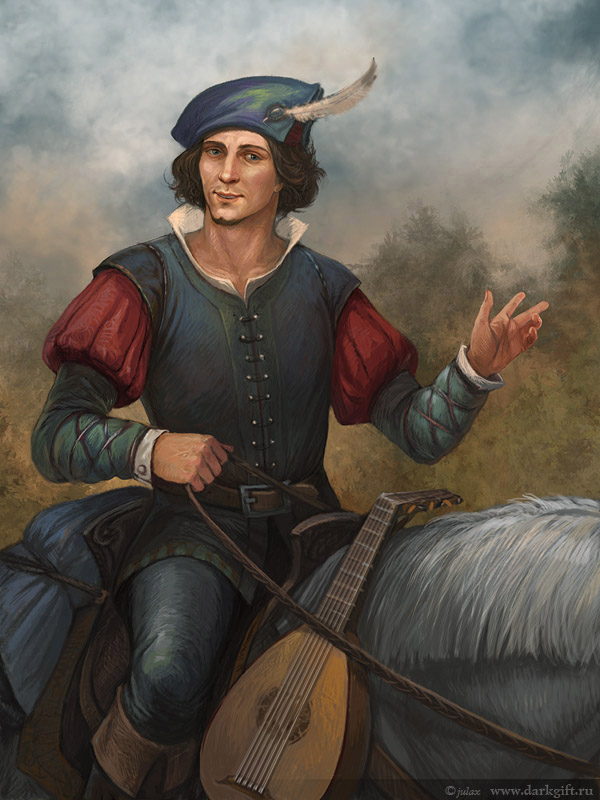
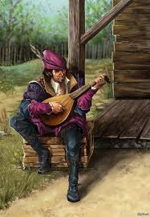
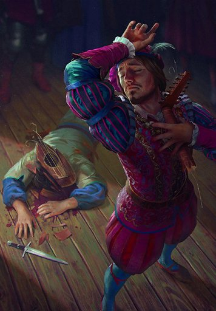

Произведения Лютика
Мемуары «Полвека поэзии» «Невзгоды любви» «Час Луны»
  
Помимо мемуаров «Полвека поэзии» и сборников поэтических произведений «Невзгоды любви» и «Час Луны» Лютик является автором многочисленных баллад : «Вечный огонь», «Неуловимая», Песня Лютика «Цветок Эттариэль» и др.